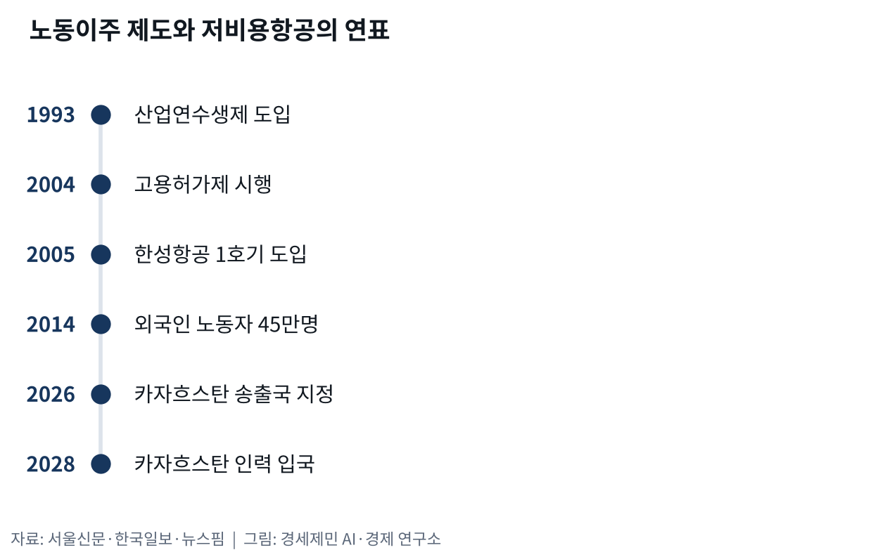
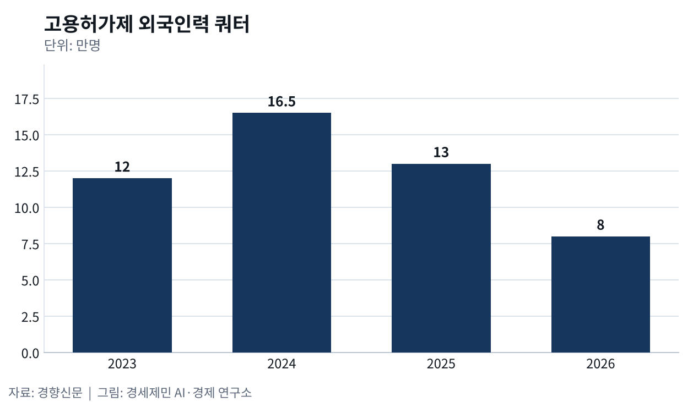
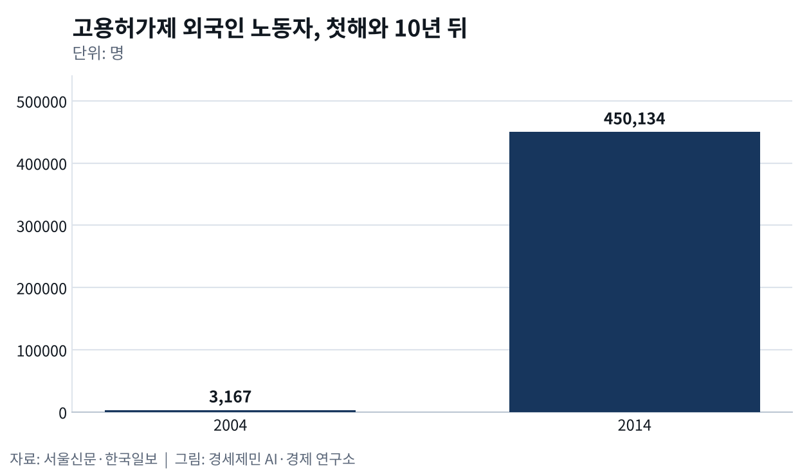

노동이주와 저비용항공
- 2004년 유럽과 한국에서 일하러 오는 사람에게 문이 함께 열렸다
- 싼 비행기가 좁힌 거리와 고향으로 날아간 돈
2004년 유럽과 한국에서 일하러 국경을 넘는 사람에게 문이 함께 열렸다. 폴란드가 유럽연합에 든 그해부터 영국으로 가는 폴란드 사람이 크게 늘었고, 한국은 8월 17일 고용허가제를 시행했다. 두 흐름을 실어 나른 것은 배가 아니라 비행기였다. 일하러 떠나는 사람과 싼 항공권이 어떻게 맞물렸는지 사실로 짚는다(교통지리학저널·서울신문).
2004년, 두 개의 문
영국 드몽포르대 캐시 버렐은 2011년 교통지리학저널에 낸 논문에서 이 흐름을 짚었다. 두 나라 항공 당국 통계로 보면 2004년 뒤 영국과 폴란드 사이 항공 여객이 크게 늘었고 라이언에어가 주요 항공사 가운데 하나였다. 그는 어떤 면에서 이 항공편을 빼고는 새 이주를 말하기 어렵다고 적었다. 논문 제목부터 라이언에어 여행을 옛 이민선 3등 선실(steerage) 여행에 빗댔다(교통지리학저널).
한국 쪽 문은 제도였다. 앞서 1993년 들여온 산업연수생제도는 사업장 이탈과 불법체류, 인권 침해와 송출 비리가 꼬리를 물며 사회문제가 됐다. 이를 대신해 2004년 들인 고용허가제는 정부가 발급한 취업비자로 노동자를 들이고 국내 노동자와 같은 대우를 보장한다고 내걸었다. 시행 첫해 3167명이던 외국인 노동자는 2014년 4월 45만134명으로 불었다(한국일보·서울신문).

문이 열렸다고 비용이 사라지지는 않았다. 시행 이듬해인 2005년 6월 문화일보는 베트남 법률신문을 인용해 한국행 희망자가 송출 중개회사에 적잖은 돈을 낸다고 전했는데, 산업연수생제 법정 송출비용보다 6배 넘게 많은 금액이었다. 인도네시아는 송출 비리가 잇따르자 그해 6월 1일부터 자국민 한국 송출을 무기한 멈췄다(문화일보).
중개인과 싼 항공권
송출 비용을 쥐는 쪽은 중개인이다. 린드퀴스트는 2017년 학술지 모빌리티스에 실은 논문에서 인도네시아 노동자를 말레이시아 팜유 농장으로 보내는 경로를 따라갔다. 중개인은 노동자가 가는 길 옆을 함께 오갔고, 그 움직임을 받친 것은 휴대전화, 저비용항공사, 새로 맺은 인간관계였다. 그는 이 얼개를 이주 인프라라고 불렀다(모빌리티스).
한국 고용허가제는 국가 간 양해각서를 맺어 민간 개입 없이 인력을 들이는 제도다. 근로계약은 송출기관을 거쳐 맺고, 노동자는 현지에서 사전교육을 마친 뒤 E-9 비자를 받고, 입국일은 한국산업인력공단이 짠 계획을 따른다. 인천공항에 내리면 취업교육기관으로 옮겨 16시간 교육과 건강검진을 거친 뒤 계약한 사업장에 배치된다(뉴스핌·한국산업인력공단).

송출국은 필리핀과 베트남과 네팔과 캄보디아를 비롯한 17곳이었다. 정부는 2026년 8월 14일 외국인력정책위원회에서 카자흐스탄을 18번째 송출국으로 정했고 2028년부터 들일 예정이다. 한국고용정보원 집계로 2022년 고용허가제 노동자 국적은 네팔이 15.7%로 가장 많았고 캄보디아가 15.2%로 뒤를 이었다(뉴스핌·매일노동뉴스).
들이는 규모도 크게 출렁였다. 쿼터는 2018~2022년 5만~6만명대였다가 2023년 12만명, 2024년 16만5000명까지 늘었다. 실제 들어온 인력이 절반 수준에 머물자 2025년 13만명으로 줄었고 2026년은 8만명으로 정해졌다. 2023년 3월 기준 인천에서 일하는 E-9과 H-2 노동자는 6만2528명이다(경향신문·인천투데이).
좁아진 하늘, 날아간 돈
한국 저비용항공도 그 무렵 날개를 폈는데, 청주 한성항공은 2005년 3월 부정기항공운송사업 면허를 얻고 7월 2일 66석으로 고친 터보프롭기 1호기를 들여왔다. 청주와 제주 사이 요금을 기존 항공료의 60~70% 선으로 잡겠다고 했다. 같은 해 제주도와 애경그룹이 출자한 제주에어는 일본과 중국 단거리 국제선까지 검토했다(한국일보).

스무 해 뒤 인천공항 국제선 여객이 많은 나라 다섯 가운데 넷은 아시아였다. 2025년 인천공항 국제선 이용객은 7323만8185명이었고 나라별로는 일본, 중국, 베트남, 미국, 태국 순이었다. 김해공항에서도 베트남이 209만3088명으로 일본 다음이었다. 이 값은 출발과 도착을 합친 여객 수로, 관광객과 출장객과 일하러 오가는 사람을 가리지 않고 센 것이다(여행신문).
그 길로는 돈도 흘렀다. 세계은행이 2024년 6월 낸 보고서를 보면 2023년 송금이 국내총생산에서 차지하는 비중은 고용허가제 송출국인 타지키스탄이 통가에 이어 두 번째로 높은 39%였다. 네팔과 키르기스스탄도 중·저소득국 상위 열 나라에 들었다. 한국발 소액 송금 수수료율 5.3%는 주요 20개국 가운데 가장 낮았다(세계은행).
버렐은 라이언에어가 옛 이민선처럼 이주민 건강과 안전을 위협하지는 않는다고 선을 그었다. 다만 둘 사이에 닮은 데가 있다고 결론에서 짚었다. 인터뷰에 응한 이주민들은 편리함을 인정하면서도 비행 경험은 나쁘게 말했고, 한 비행기에 몰려 탄 이주민끼리 긴장도 생겼다. 싼 좌석값이 곧 좋은 여정은 아니었다는 뜻이다(교통지리학저널).
2004년 3167명으로 시작한 한국행 하늘길은 스무 해 넘게 이어졌다. 2026년 E-9 쿼터는 8만명으로 한 해 전 13만명보다 줄었고, 송출국은 카자흐스탄이 18번째로 지정됐다. 문을 여는 나라는 늘고 들이는 사람은 줄어든 셈이다. 카자흐스탄 노동자가 들어오는 2028년에 그 두 숫자가 어디에 닿을지가 앞으로 지켜볼 대목이다(서울신문·경향신문·뉴스핌).
※ 이 기사는 AI 프로그램 클로드를 활용해 작성했습니다.
이 기사는 인공지능을 활용해 작성했습니다. 사실관계는 저자가 확인했습니다.
참고문헌
공식 발표자료와 공공기록
- 한국산업인력공단, "입국에서 출국까지", 외국인 고용지원 사이트 고용허가제 안내. https://eps.hrdkorea.or.kr/e9/user/employment/employment.do?method=immigrationLabor
연구보고서와 논문
- Kathy Burrell, "Going steerage on Ryanair: cultures of migrant air travel between Poland and the UK", 『Journal of Transport Geography』 19권 5호, 2011년 9월, 1023~1030쪽. https://doi.org/10.1016/j.jtrangeo.2010.09.004
- J. Lindquist, "Brokers, channels, infrastructure: moving migrant labor in the Indonesian-Malaysian oil palm complex", 『Mobilities』 12권 2호, 2017년, 213~226쪽. https://doi.org/10.1080/17450101.2017.1292778
- World Bank·KNOMAD, "Remittances Slowed in 2023, Expected to Grow Faster in 2024", 『Migration and Development Brief』 40호, 2024년 6월. https://documents1.worldbank.org/curated/en/099714008132436612/pdf/IDU-a9cf73b5-fcad-425a-a0dd-cc8f2f3331ce.pdf
언론 보도
- 박양수, "'고용허가제' 현지 송출비리 파문", 문화일보, 2005년 6월 15일. https://www.munhwa.com/article/10502740
- 한덕동·송두영, "저가항공 시대/ 청주~ 제주 9만원대에 다녀온다", 한국일보, 2005년 7월 17일. https://www.hankookilbo.com/news/article/200507170085827971
- 박선영, "외국인노동자 고용허가제 시행 5년/ 효과와 문제점", 한국일보, 2009년 8월 16일. https://www.hankookilbo.com/news/article/200908162355190090
- "외국인 고용허가제 10년의 명암", 서울신문(연합뉴스), 2014년 8월 13일. https://www.seoul.co.kr/news/society/2014/08/13/20140813800186
- 이종선, "[노동절] 아플까 '조마조마' 이주노동자 건강보험 의무 사각지대", 인천투데이, 2023년 5월 1일. https://www.incheontoday.com/news/articleView.html?idxno=229461
- 이재, "[2022년 이주노동자] '20대·베트남 줄고 40대·네팔 늘고'", 매일노동뉴스, 2024년 10월 4일. https://www.labortoday.co.kr/news/articleView.html?idxno=223968
- 최서은, "내년 고용허가제 외국인력 8만명으로 축소…외국인 가사관리사 본사업은 추진 안해", 경향신문, 2025년 12월 22일. https://www.khan.co.kr/article/202512221801001
- 김다미, "[단독] 2025년 항공 여객 실적 분석② 엇갈린 수요 곡선…노선·공항·항공사별 양극화 뚜렷", 여행신문, 2026년 1월 26일. https://www.traveltimes.co.kr/news/articleView.html?idxno=415115
- 양가희, "카자흐스탄서도 이주노동자 온다…고용허가제 송출국 확대", 뉴스핌, 2026년 8월 14일. https://www.newspim.com/news/view/20260814000163